Problem
Two paths. No connection.
Today, when a customer actually needs support, they consider one of two paths: they can either figure something out themselves or they can ask for help from Atlassian support staff. But these two paths are very disconnected and there's so much gray area in the ways that customers actually get help. When a customer gets help, they're going to different Atlassian properties, but all of those properties are owned by a different part of the business that don't really talk to one another. This quickly becomes a really overwhelming experience.
The data supports this: 60% of customers that are attempting to find support end up bouncing. Ultimately, the way our support is set up today leaves customers confused and not getting the help that they need.
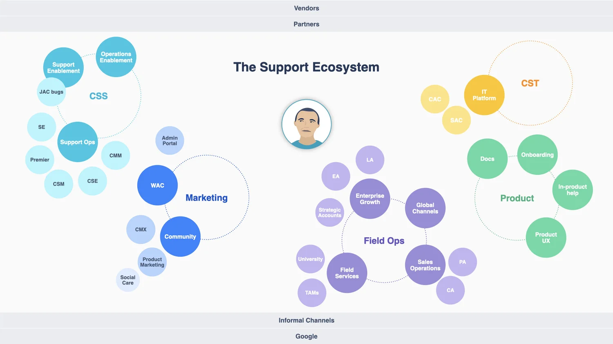
The Need
An actionable vision for the future of support
Deliver an actionable vision and strategy of the future of support at Atlassian to provide all customers with best-in-class experiences as we continue to scale.
My Role
Research, synthesis, concepts
- Leading research and synthesis
- Compiling journey maps and blueprints
- Concept generation and iteration
Understanding Atlassian Support's Strategic Position in the Market
From cost center to strategic asset
When looking at the competitive landscape of support, one aspect that popped out was defining how Atlassian considers what support "is" for its business. In order to grow cloud business and stay competitive with increasing market competition and nimble point solutions, Atlassian must reposition Customer Support from a cost center to a fundamental asset of its strategic relationship and revenue drivers.

User Research
23 individuals across three cohorts
Qualitative research is based on deep inquiry (vs broad investigation), so it's important to get the study mix just right to ensure a representative but diverse sample of participants. After defining our research objectives, I scheduled time with the people who can best answer our questions. For this study, we talked to 23 individuals representative of specific roles & contexts across our three cohorts: customers, partners, and internal team members.

"You have all the support platforms available, but the connection among them is missing."
— Jack, SMB Cloud Admin
"The pain we inflict on our customers is the pain we inflict on ourselves."
— Kameron, Customer Advocate Team Lead
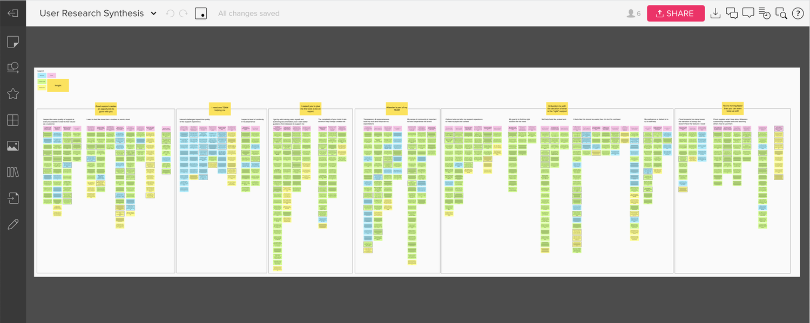
Key Insights
6 insights to guide us forward
01 Good support creates an opportunity to grow with you
The better support I receive at every level, the more confident I feel about working with you.
02 I need one team working for me
When I reach out to support, I expect a certain level of cohesion. I want to feel like I am interacting with one company.
03 I expect you to give me the tools and guidance to be an expert
Complex software requires sophisticated support to match — I expect you to set me up for success throughout my journey with your products.
04 Atlassian is part of my team
I value the sense of community created by the transparency of the business and the camaraderie of your customers because it gives me the sense that we're in this together.
05 Unburden me with the decision of what is the right support
When I need help, I expect you to surface the relevant path so I don't have to navigate your ecosystem on my own — when I get it wrong, it costs me time and money.
06 You're moving faster than you can even keep up with
I want the business to evolve but not at my expense — big shifts like the push to cloud must feel seamless for me because you've done the hard work to mitigate impact before rollout.
Understanding the User Journey
Mapping what nobody had mapped before
Based on the conversations I had with our customers and support staff, I created an interactive as-is journey that captures customers and Atlassians on their current-state support journeys to better understand their pain points and successes along the way.
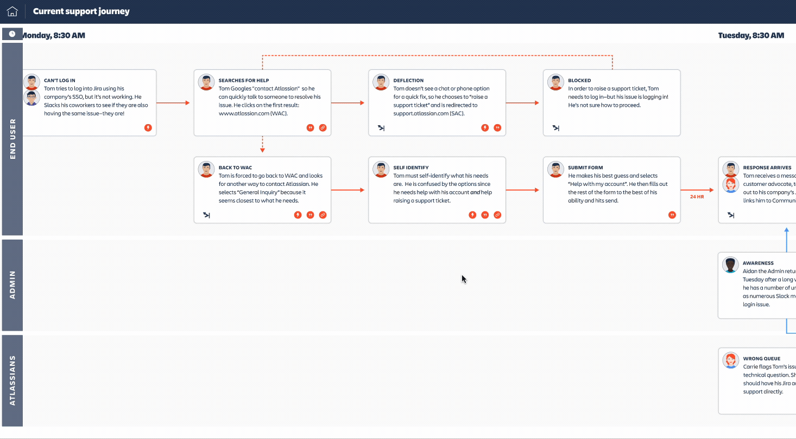

Identifying Gaps Along the Way
The support spectrum
The way we decided on which concepts and strategies needed to be defined for Atlassian was looking at the spectrum of the support landscape (based on what we heard from customers and auxiliary competitive research). What you will see below is the spectrum of support from "no touch" to "high touch." It became immediately clear that Atlassian has emphasized their high touch support offerings, and so it was no wonder that customers were always opting to open a support ticket. This spectrum presented fertile ground to consider how we may close the experience gaps within our no touch, low touch, and medium touch areas.
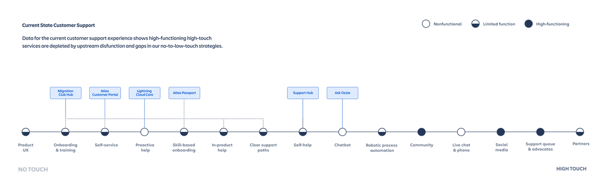
From Learnings to Concepts
Five future-of-support concepts
Based on an assessment of our current state customer support experience, Project Align identified five future of support concepts to support customers at scale…and at expectation! These concepts were used to drive our learnings in a very tangible way to the business to show where Atlassian should be investing their time and energy.
01 Lightning Cloud Care
Harnessing cloud data to anticipate customer support needs with lightning speed and accuracy, improving self-sufficiency and time-to-resolution while reducing unnecessary high-touch contact.
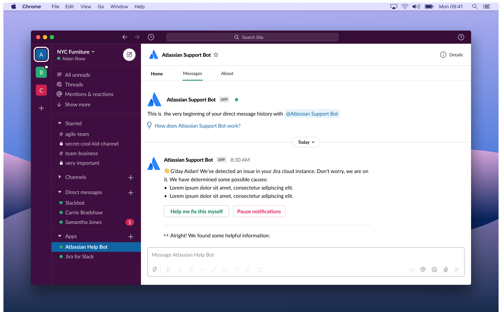
02 Support Hub
The manifestation of our bold brand promise is a streamlined front door to all Atlassian support that simplifies how customers access, understand, and use support — with an emphasis on autonomy.
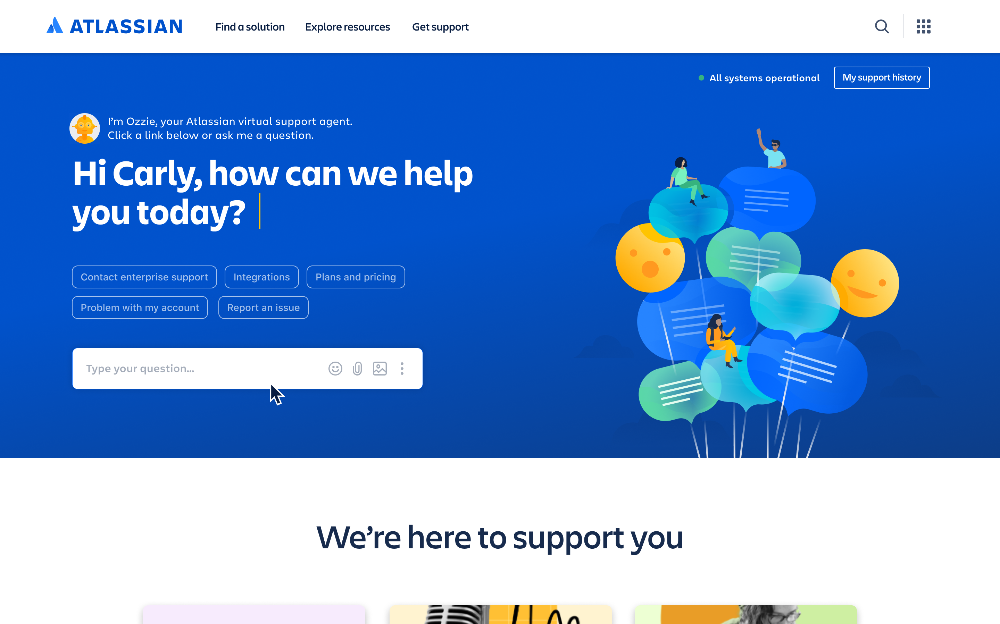
03 Ask Ozzie
Everyone's virtual support agent and the "face" of Atlassian support, Ozzie offers AI-driven routing to connect customers to the best support for the issue at hand and streamline ticket creation if high-touch support is needed.
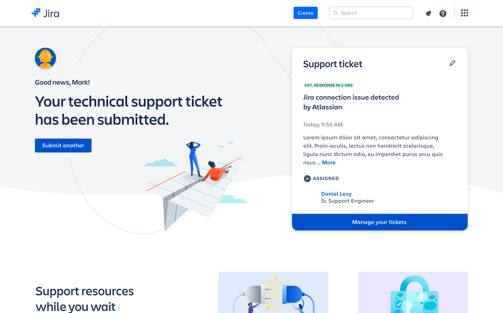
04 Atlas Portal & Passport
A personalized dashboard centralizing accounts, products, support entitlements, and recommendations. A companion Passport stays with the customer for fast access to key features and dynamic content throughout their journey.
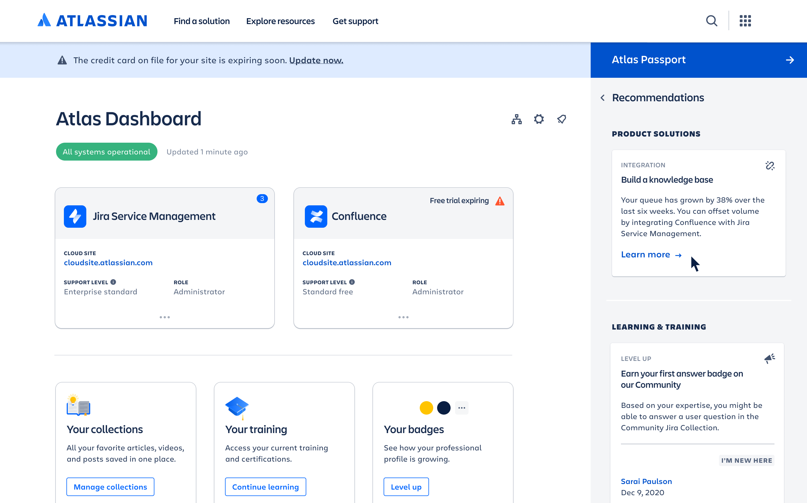
05 Migration Club
A learning and success center that centralizes cloud information, including transition tools and resources, with a focus on rallying excitement about the new possibilities in cloud in order to develop Atlassian Cloud Champions.
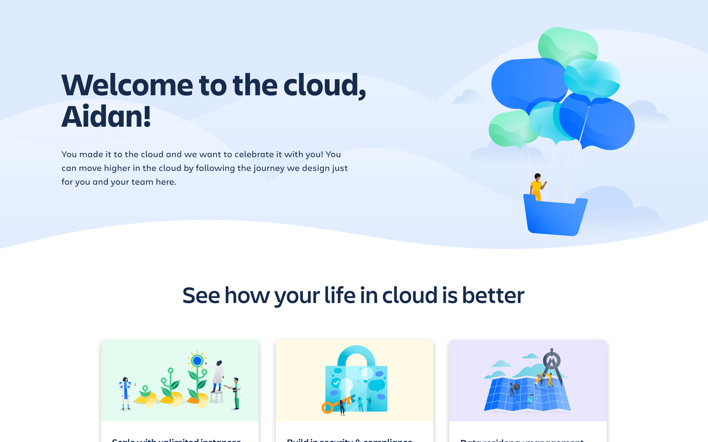
Bringing Concepts to Life
Experience journeys for every user type
These 5 concepts were then brought to life in experience journeys that highlight the value to the many different types of end users and admins that use our products.
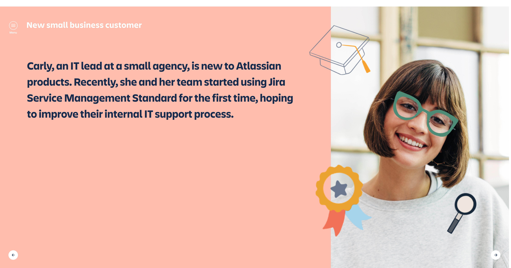
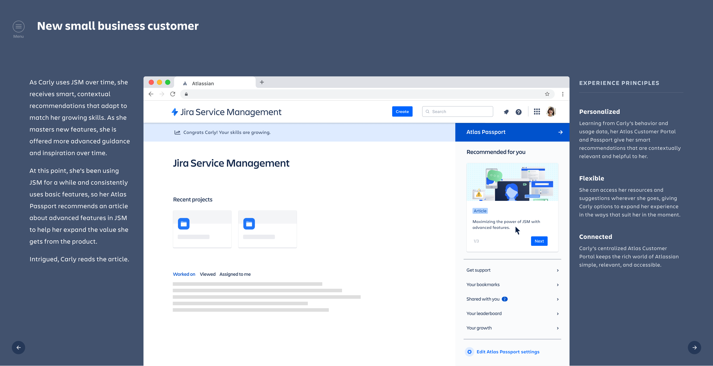
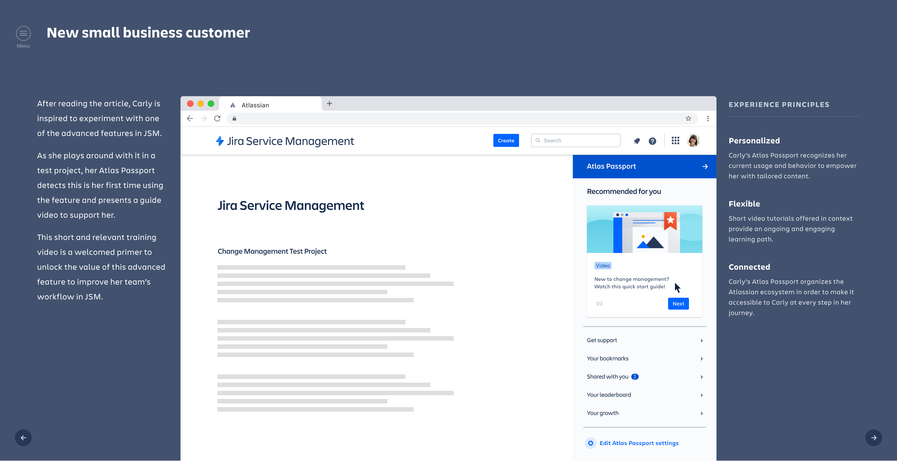
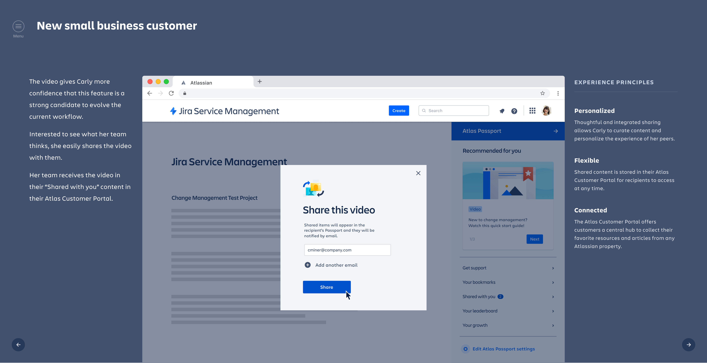
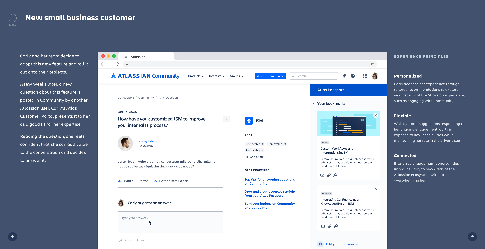
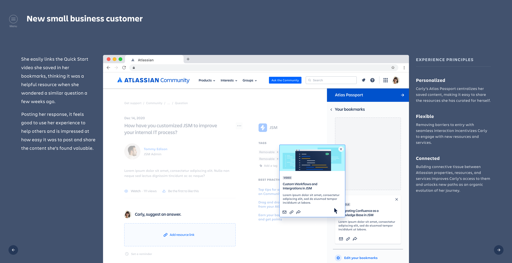
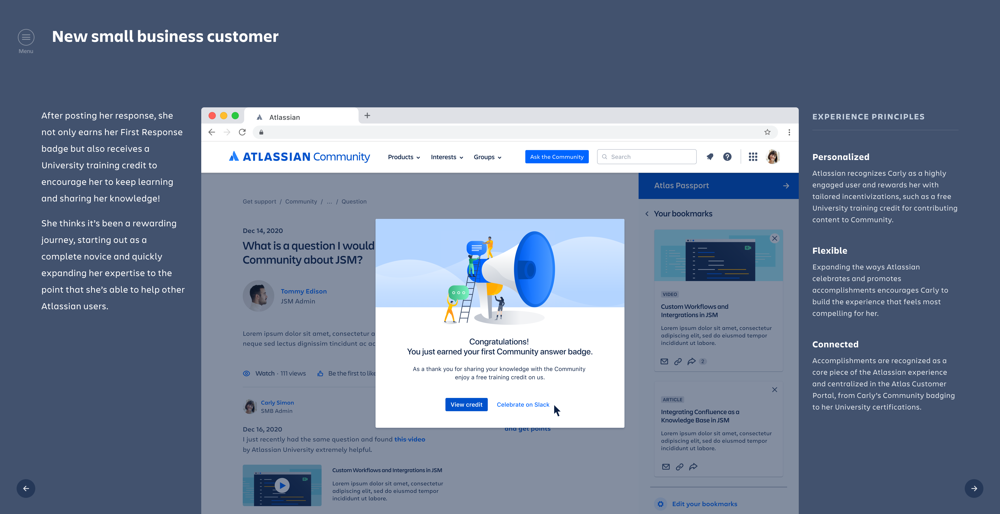
Experience Highlights
Connected ecosystem — Carly is able to engage with Community and University right from her Atlassian Passport.
Contextual history — Carly is able to post interactive media to community from her Passport from content she used to help herself.
Proactive engagement — We are able to bring Carly into relevant discussions to expand her engagement with our platforms.
Concept vignette 2


Experience Highlights
Seamless onboarding — We are able to extend the migration and cloud experience by offering customers a place to go to continually grow their skillsets.
Contextual history — Integrating with services customers already love, we're able to leverage cloud data, for pointed, just-in-time help.
Proactive engagement — Leveraging cloud data we are able to deeply understand a customer and their situation — giving us the ability to surface relevant, proactive help.
Impact of this work
Project Align has influenced FY22 strategy and beyond.
This work has driven where Atlassian is focusing its support experimentation.
Atlassian is now moving forward with an AI assistant concept directly influenced by this work — and we have continued driving it forward as strategic design partners.
Next Steps
Unification of the contact experience.
Deliver cross-channel traffic and deflection strategy.
Begin working on experiments with development team.